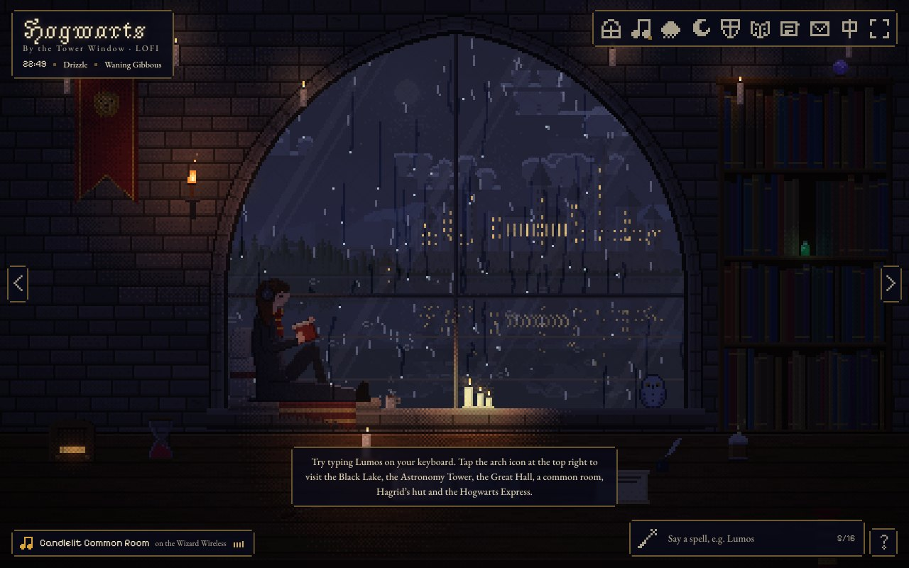

Hogwarts Tower Lofi
by ATou
A pixel-art Hogwarts retreat with changing scenes, house common rooms, weather, music and small discoveries.
Capabilities & usage
- Combine procedural visuals, ambient sound and interaction into a persistent browser experience.
- Publish a world with multiple scenes rather than a single generated image.
- Access
- Public browser experience. Personal settings and shareable links have their own local-state behavior.
- Cost
- No paid generation was performed; viewing existing scenes is distinct from recreating the work.
- Reuse
- Unofficial, non-commercial fan work. No source or asset reuse license verified.
Checked 2026-09-29. Public Cohub page and controls viewed. Enrollment, letters and media export were not fully audited.